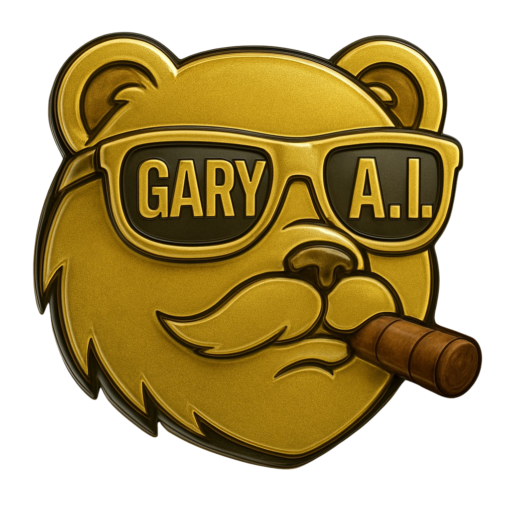

THE PACK AND THE BOARD
U2 with U4 folded in. The first phone runs on its own; tap either phone to run it. The pack rips (U2), the ticket lands, then it parks at the top and the three reasons clatter in underneath on the split-flap board (U4). A second tap during the run skips to the end; a tap when it is done replays. Both plays are yesterday's real card, and every reason is pulled from Gary's own take on that play.
TIGERS MLYesterday's $100 play. Won 9-2.

WINNERS
SEP 21
Nationals @ Tigers$100WIN · WSH 2 · DET 9
Detroit's relievers carry a 2.48 ERA and 1.03 WHIP to Washington's 4.53 and 1.45, and both starters are on a short leash.
Hinch named Keider Montero behind River Ryan, four days after 89 pitches. Washington has no bulk arm behind DJ Herz.
All three of Washington's late arms worked Sep 19 and Sep 20 and got scored on both nights. Jansen and Kinley have two days off.
THE BREAKDOWN›
REPLAY
GIANTS +6.5Yesterday's $100 play. Lost.
Giants @ Rams$100LOSS · NYG 9 · LAR 33
Missed Friday and Saturday practice. Stafford threw him 9 of his Week 1 targets and nobody else topped 26 yards.
The Rams gave up 174 rushing yards and 5.9 a play to San Francisco with him. Now Garrett is on IR against Week 1's most physical run team.
Two 8-minute second-half drives in Week 1; Dallas got two possessions after halftime. That style caps possessions.
THE BREAKDOWN›
REPLAY
IN THE APP
- Timing. Rip 2.6 s, the ticket lands and the pick spells itself out on the flaps for about 2.7 s, the stake stamps at 5.4 s, the ticket parks at 6.3 s, the three reasons clatter in over the next 3 s. About 10 s end to end. A tap at any point jumps to the parked ticket with the board filled. A second tap opens the breakdown.
- The three reasons are the biggest reasons in Gary's own take, in his words, with the number. They come from the pick at decision time (a short reasons list in the pick ask), so the card's front and the case underneath say the same thing.
- Yesterday's plays open without the rip: the ticket sits parked with its grade and the three reasons already up.
- Reduce Motion on the phone skips the rip and shows the parked ticket and the board at once.